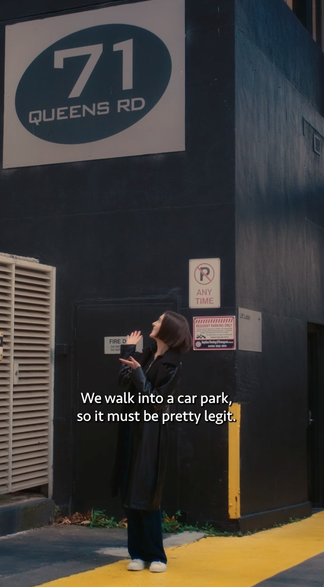

21st Day
Did some further annoation for the starward videos that the other videograoher added in after the weekend and added them to the G sheet for the 48 hours video. Noticed some legal notes for the caretakerts cootage video in regards to media requirments within use of liquor and alerted my boss.
22nd Day
 Link to Final Instagram ReelToday I worked on more BTS file annotation and subtitles for the "Where the F is that" series. I learned that sometimes doing things quickly is better than being extremely throughout (with communcation obviously) as the BTS annotation was taking a while my boss told me a way to speed it up but still make it useful to the other editors. I achived the final video for the Where the F series and helped finish of the BTS sheet which contributes to the other editors for the 48 hours in melbourne video.
23rd Day
Finished off the 48 hours in melbourne G sheet. I learnt that when there is deadlines that seem stressful its okay (and best) to reach out and express concern that you need assistsance.The end result is more important and media requires quick deadlines. I achived the finailised g sheet and contributed to the handover for the head editor.